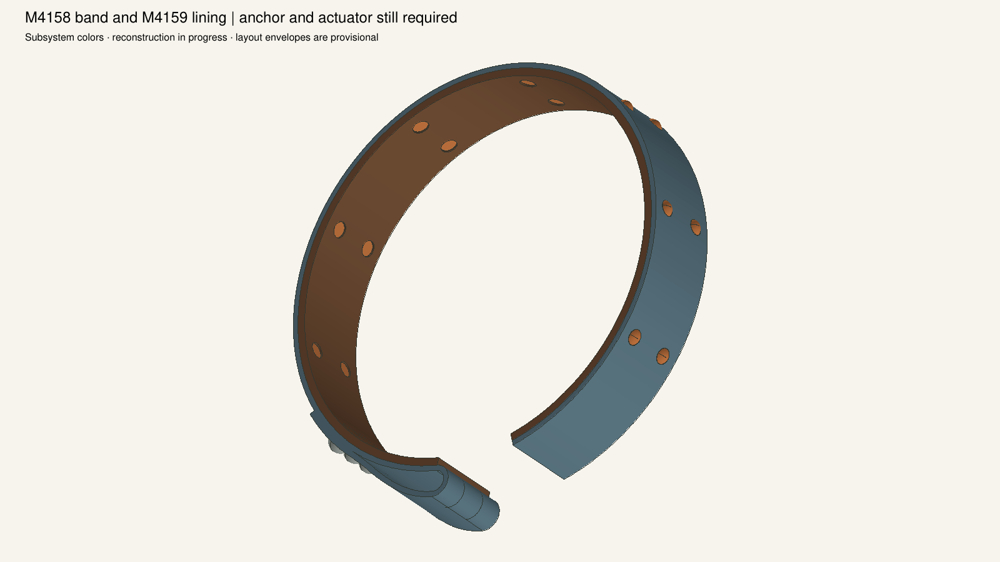
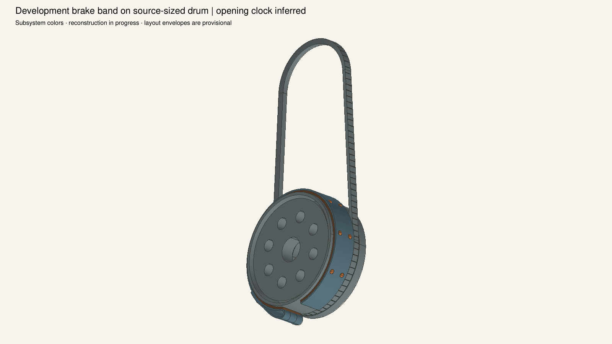
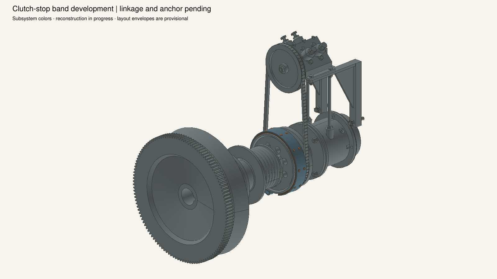
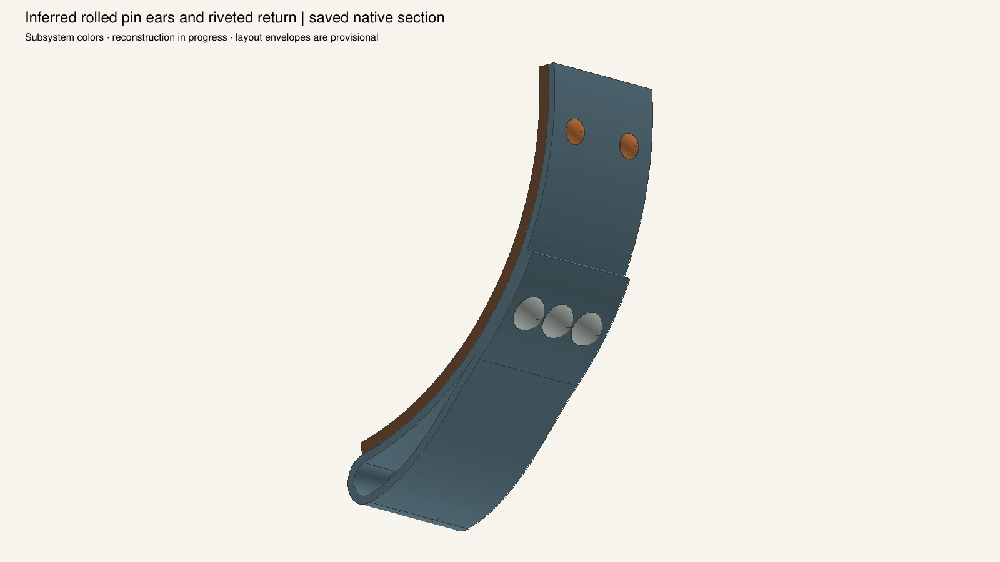
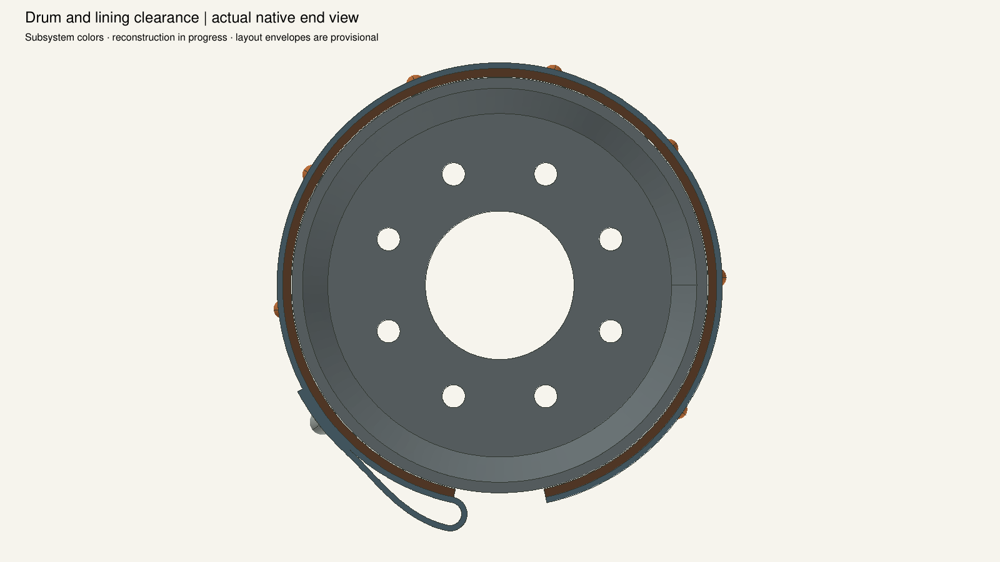
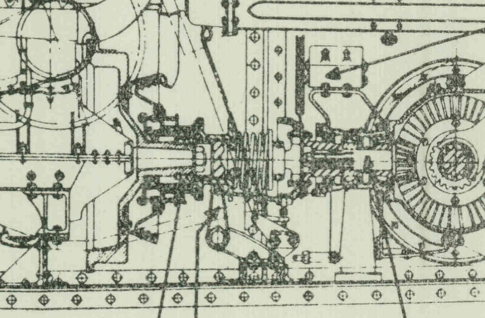

The full SNL2 original was inspected before the viewing crop; crop pixels are unchanged.
Band stock, returned eye, rivet layout and bottom opening are inferred; this figure does not resolve them.
Printed drum diameter9.25in; lining2in wide,3/16in thick,27-3/4in cut length.
The sharper source places the transverse throwout shaft lower than the earlier visual reading.
Anchor, six anchor rivets, pin/eyebolt and operating linkage remain required. No complete brake claim.
Source and native images have independent scales; no calibrated overlay or historical-fit claim.







Native hash: c775ebfcb77d68cbb05e87cc96a68522dc0289b3c36aecd119284cbdb2c2e3e3